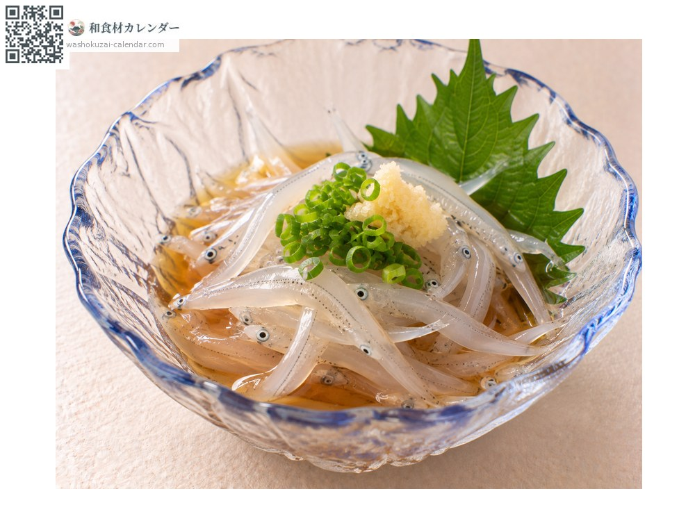
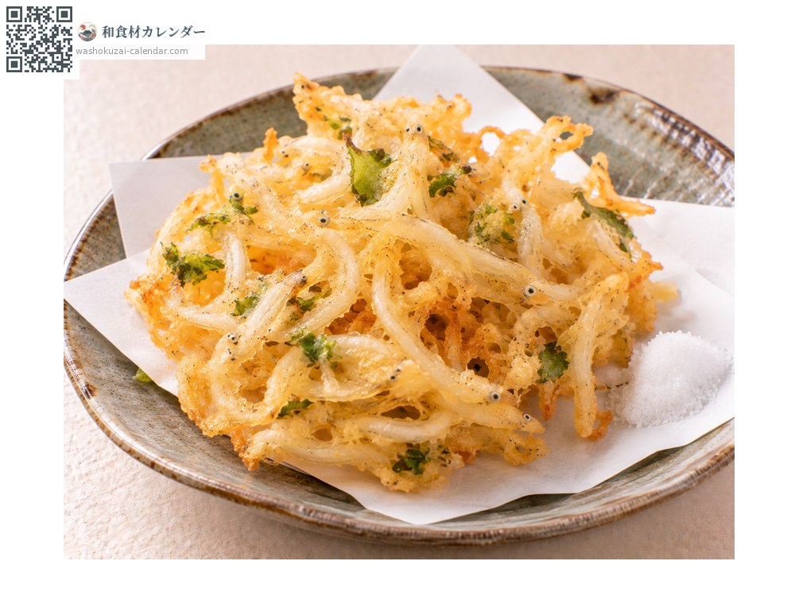
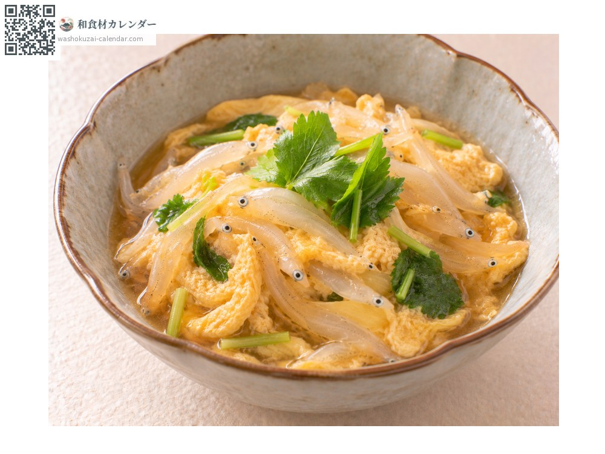
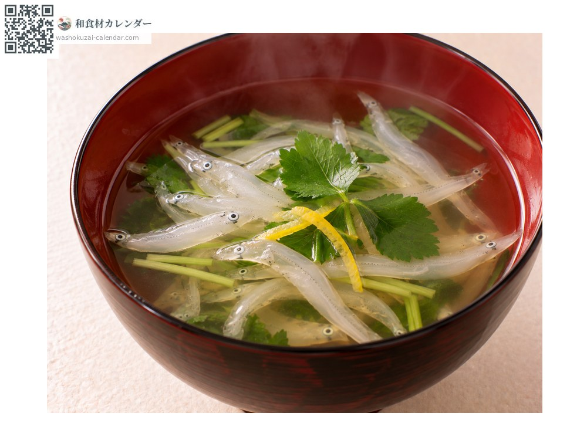

魚介
白魚
しらうお
別名・別表記シラウオ、shirauo
旬は3月・4月・5月

旬の時期
1月
2月
3月
4月
5月
6月
7月
8月
9月
10月
11月
12月
旬出回り
調理法

踊り食い
活けたまま三杯酢で。春の風物詩とされる。

天ぷら
かき揚げにする。ふわりと仕上がる。

卵とじ
出汁で煮て卵でとじる。上品な味わい。

吸い物
椀に浮かべる。透明感が美しい。
選び方
体が透き通り、黒い目がはっきりしているもの。身が崩れていないもの。
保存方法
鮮度落ちが極めて早い。当日中に使い切る。
主な産地
豆知識
シラウオ科の魚で、ハゼ科のシロウオとは全くの別種。混同されやすいが、白魚は死ぬと白く濁り、シロウオは生きている間も透明。徳川家康が好んだと伝えられ、江戸では春の到来を告げる魚とされた。